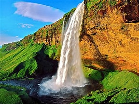

One of the most popular waterfalls in the world is also in Iceland, and it is known as Seljalandsfoss. There is not much history behind the waterfall, but there are some viking artifacts that were found nearby, suggesting that maybe a small population of Vikings lived nearby the waterfall.
